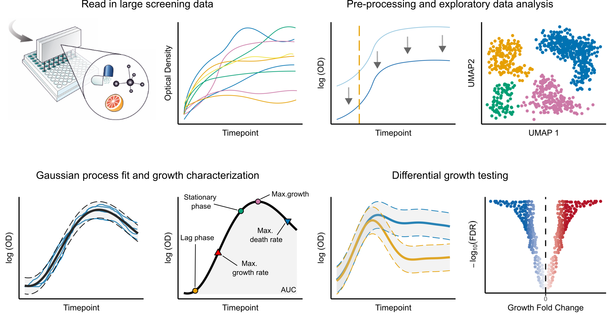

This repository hosts the DGrowthR R package and the workflow for the detailed analysis of publicly available datasets mentioned in our pre-print. This workflow is designed to showcase the application of the DGrowthR package to model complex, non-linear dynamics of bacterial growth using Gaussian Process Regression.

[!TIP] For more details, check out our pre-print Statistical end-to-end analysis of large-scale microbial growth data with DGrowthR on bioRxiv. DGrowthR is also available as a [standalone Desktop-App] for Windows and Apple (https://zenodo.org/records/15118187).
Installation Guide
To install the DGrowthR R package directly from this repository. First make sure you clone the repository and enter into the cloned folder. Then you can execute the following commands in R.
- Ensure that you have the
devtoolspackage installed. If not, you can install it using the following command
# Install devtools
install.packages("devtools")
# Load the library
library(devtools)- Use the
installfunction to install theDGrowthRpackage:
install()How to use DGrowthR.
An overview of the main functionalities of DGrowthR with concrete examples can be found in our tutorial vignette
Analysis workflow.
Additionally, you see our analysis of publicly available datasets from the Brochado 2018 and Brenzinger 2024 studies.
All steps are in our workflow folder